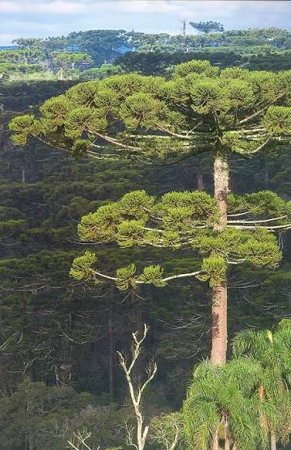
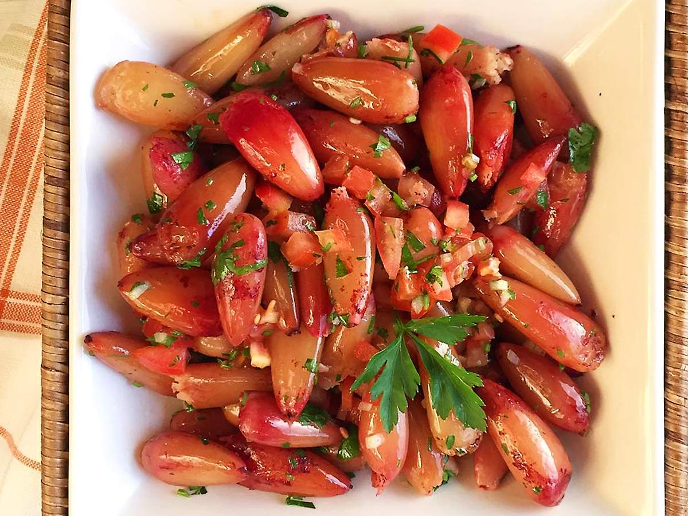

O Ouro da Floresta das Araucárias
O pinhão é a semente da Araucaria angustifolia, árvore símbolo do sul do Brasil e da Mata de Araucárias. Muito além de um alimento tradicional das estações frias, ele traz uma identidade cultural profunda e um sabor único para a cozinha. Em nosso site, exploramos como esse ingrediente secular pode transformar receitas do dia a dia em pratos sofisticados e repletos de história, unindo a tradição dos povos originários e tropeiros às técnicas da gastronomia moderna.

Versatilidade que Surpreende o Paladar
Seja cozido, assado ou moído em forma de farinha, o pinhão se destaca pela sua incrível capacidade de adaptação tanto em pratos doces quanto salgados. Ele pode ser o protagonista de um entrevero apetitoso, o toque cremoso de um risoto, o recheio de massas artesanais ou até a base para bolos e sobremesas surpreendentes. Acompanhe nossas receitas e descubra como extrair o melhor dessa semente versátil e rica em nutrientes.

Do Campo para a Sua Mesa: Dicas e Técnicas
Cozinhar com pinhão exige alguns segredos que fazem toda a diferença no resultado final, desde a escolha das melhores sementes até o ponto ideal do cozimento e o descasque prático. Aqui você encontra tutoriais passo a passo, técnicas para otimizar seu tempo na cozinha e combinações de temperos e ingredientes que valorizam o sabor marcante do pinhão. Prepare seu avental e eleve suas habilidades culinárias a um novo patamar.

Curiosidades
Um Alimento Supernutritivo e Funcional
Além de saboroso, o pinhão é uma excelente fonte de energia, rico em carboidratos de baixo índice glicêmico, fibras, magnésio e potássio. Ele ajuda a prolongar a sensação de saciedade e é naturalmente livre de glúten, o que o torna uma alternativa saudável e nutritiva para substituir farinhas tradicionais em diversas preparações.
Aliado Essencial na Preservação da Fauna
O consumo consciente do pinhão ajuda a valorizar e proteger as florestas de araucária, mas você sabia que os animais também são fundamentais nessa história? A gralha-azul e a cotia costumam enterrar os pinhões para estocar alimento durante o inverno. Aquelas sementes que elas esquecem acabam germinando, dando origem a novas árvores e garantindo naturalmente o futuro da floresta.